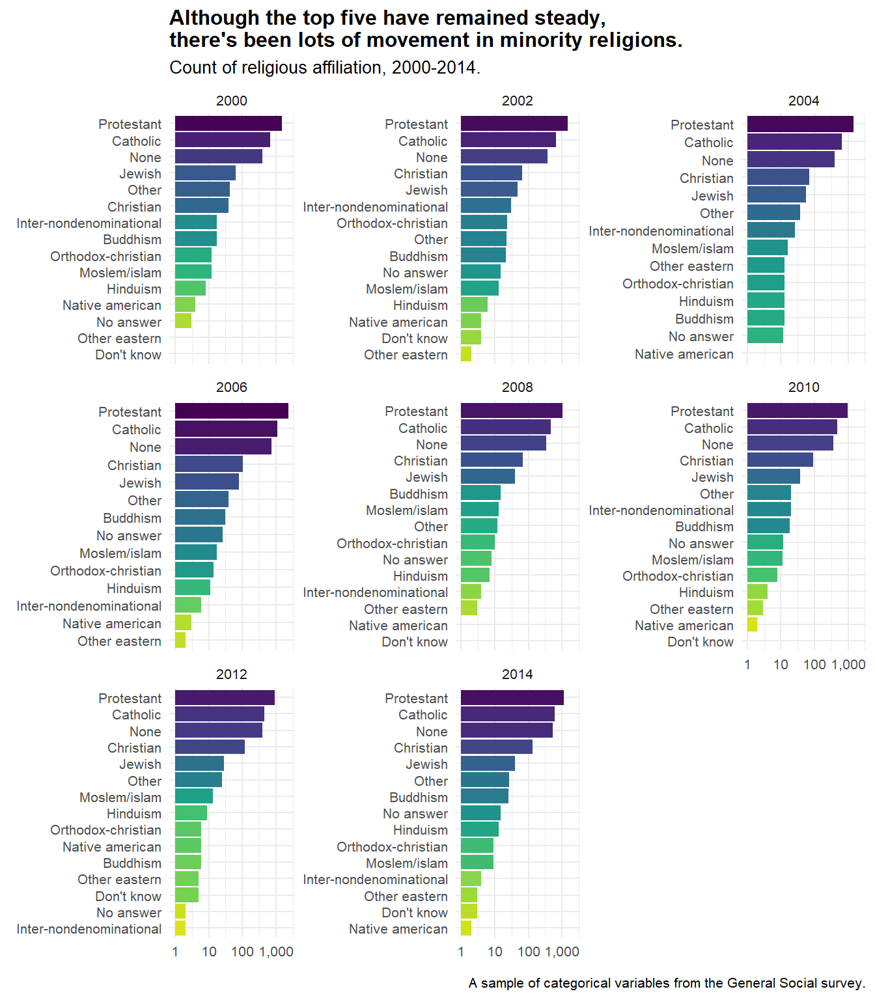

Because I often work with categorical data, I find myself making lots of quick, sorted counts of variables in a dataset. I find that this is a really common technique to get to know a dataset you’re working with; I’ve also noticed David Robinson do it often in his screencasts. (If you haven’t checked these out, I cannot recommend these enough!)
Using for loops
As always, I need to make a disclaimer that I know I should be using some type of functional like lapply or purrr::map, but again since I’m newer to programming, I find it best to make a for loop first to better understand what’s happening.
This example uses a sample of the General Social Survey found in the forcats package.
library(tidyverse)
gss <- forcats::gss_cat %>% as_tibble()
gss## # A tibble: 21,483 x 9
## year marital age race rincome partyid relig denom tvhours
## <int> <fct> <int> <fct> <fct> <fct> <fct> <fct> <int>
## 1 2000 Never ma~ 26 White $8000 to ~ Ind,near r~ Protesta~ Souther~ 12
## 2 2000 Divorced 48 White $8000 to ~ Not str re~ Protesta~ Baptist~ NA
## 3 2000 Widowed 67 White Not appli~ Independent Protesta~ No deno~ 2
## 4 2000 Never ma~ 39 White Not appli~ Ind,near r~ Orthodox~ Not app~ 4
## 5 2000 Divorced 25 White Not appli~ Not str de~ None Not app~ 1
## 6 2000 Married 25 White $20000 - ~ Strong dem~ Protesta~ Souther~ NA
## 7 2000 Never ma~ 36 White $25000 or~ Not str re~ Christian Not app~ 3
## 8 2000 Divorced 44 White $7000 to ~ Ind,near d~ Protesta~ Luthera~ NA
## 9 2000 Married 44 White $25000 or~ Not str de~ Protesta~ Other 0
## 10 2000 Married 47 White $25000 or~ Strong rep~ Protesta~ Souther~ 3
## # ... with 21,473 more rowsWhat I want to do is quick count of the responses for each column of the survey. First, I just try to do it for the first column:
gss %>%
group_by(year) %>%
summarize(n = n())## # A tibble: 8 x 2
## year n
## <int> <int>
## 1 2000 2817
## 2 2002 2765
## 3 2004 2812
## 4 2006 4510
## 5 2008 2023
## 6 2010 2044
## 7 2012 1974
## 8 2014 2538Easy enough. I could have wrote one less line of code with count(), but the reason I am not has to do with how the for loops work. I found that count() inside a for loop was nearly impossible, for reasons I have yet to understand.
Now let’s write the for loop. As always we want three things: output, sequence, and body.
gss_list <- vector("list", ncol(gss)) # 1. output
for (i in 1:ncol(gss)) { # 2. sequence
gss_list[[i]] <- gss %>% # 3. body
group_by(gss[[i]]) %>%
summarize(n = n())
}
#printing the 8th item in the list for an example.
gss_list[[7]]## # A tibble: 15 x 2
## `gss[[i]]` n
## <fct> <int>
## 1 No answer 93
## 2 Don't know 15
## 3 Inter-nondenominational 109
## 4 Native american 23
## 5 Christian 689
## 6 Orthodox-christian 95
## 7 Moslem/islam 104
## 8 Other eastern 32
## 9 Hinduism 71
## 10 Buddhism 147
## 11 Other 224
## 12 None 3523
## 13 Jewish 388
## 14 Catholic 5124
## 15 Protestant 10846Awesome! That wasn’t so bad. And what’s nice is, if I print the whole list, I get a nice quick summary of counts for every column in the dataframe.
Here’s the problem: I want the column name in the dataframe, not gss[[i]], which isn’t meaningful. If I had 40 columns for instance, how could I keep track of what’s what?
Below, I add another line inside the for loop that replaces gss[[i]] in each dataframe in gss_list to the original column names.
gss_list <- vector("list", ncol(gss)) # 1. output
for (i in 1:ncol(gss)) { # 2. sequence
gss_list[[i]] <- gss %>% # 3. body
group_by(gss[[i]]) %>%
summarize(n = n()) %>%
ungroup()
colnames(gss_list[[i]])[1] <- names(gss)[i] #here I rename the column to its orig name.
}
#printing the 8th item in the list for an example.
gss_list[[7]]## # A tibble: 15 x 2
## relig n
## <fct> <int>
## 1 No answer 93
## 2 Don't know 15
## 3 Inter-nondenominational 109
## 4 Native american 23
## 5 Christian 689
## 6 Orthodox-christian 95
## 7 Moslem/islam 104
## 8 Other eastern 32
## 9 Hinduism 71
## 10 Buddhism 147
## 11 Other 224
## 12 None 3523
## 13 Jewish 388
## 14 Catholic 5124
## 15 Protestant 10846It’s not the prettiest code, but it does the trick. I’d love a more elegant solution, but for now, it works.
A quick plot
I always end by doing a quick plot, because really what’s the point of summarizing data like this without visualizing it in some way?
First, though, I want to group by the first column year for all my counts, so I’ll tweak the for loop again.
gss_list <- vector("list", ncol(gss)) # 1. output
for (i in 1:ncol(gss)) { # 2. sequence
gss_list[[i]] <- gss %>% # 3. body
group_by(year, gss[[i]]) %>% #adding the year column
summarize(n = n()) %>%
ungroup()
colnames(gss_list[[i]])[2] <- names(gss)[i] #here I rename the column to its orig name. Note: it's the second column now!
}
#printing the 8th item in the list for an example.
gss_list[[7]]## # A tibble: 118 x 3
## year relig n
## <int> <fct> <int>
## 1 2000 No answer 3
## 2 2000 Don't know 1
## 3 2000 Inter-nondenominational 17
## 4 2000 Native american 4
## 5 2000 Christian 39
## 6 2000 Orthodox-christian 12
## 7 2000 Moslem/islam 12
## 8 2000 Other eastern 1
## 9 2000 Hinduism 8
## 10 2000 Buddhism 17
## # ... with 108 more rowsOkay, now on to plotting! This is also a chance to show off Julia Silge’s awesome reorder_within() function that allows you to easily reorder factors within each facet using facet_wrap().
library(scales)
library(tidytext) #this has reorder_within() along with a lot of great functions for working with text.
theme_set(theme_minimal(base_size = 10) +
theme(plot.title = element_text(face = "bold"),
axis.text = element_text(size = 8))
)
gss_list[[7]] %>%
mutate(relig = reorder_within(relig, n, year)) %>% #use this inside of mutate
ggplot(aes(x = relig, y = n, fill = relig)) +
geom_col() +
coord_flip() +
facet_wrap(~year, scales = "free_y") +
scale_x_reordered() + #and this to scale it properly.
scale_fill_viridis_d(direction = -1) +
scale_y_log10(labels = comma_format()) +
theme(legend.position = "none") +
labs(
title = "Although the top five have remained steady,\nthere's been lots of movement in minority religions.",
subtitle = "Count of religious affiliation, 2000-2014.",
x = element_blank(),
y = element_blank(),
caption = "A sample of categorical variables from the General Social survey."
)
Another thing to note that David Robinson got me hooked on is scale_y_log10(); without it in this particular plot, it would be difficult to see how the smaller minority religions have changed across time.